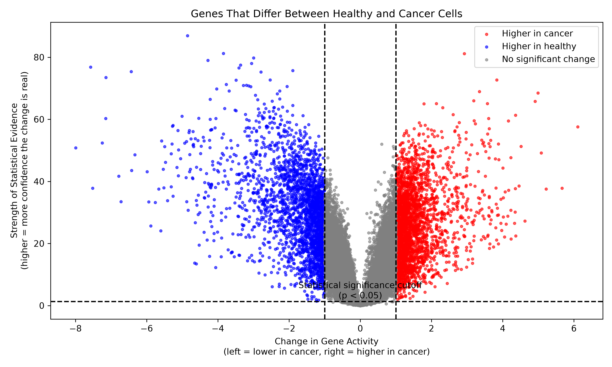
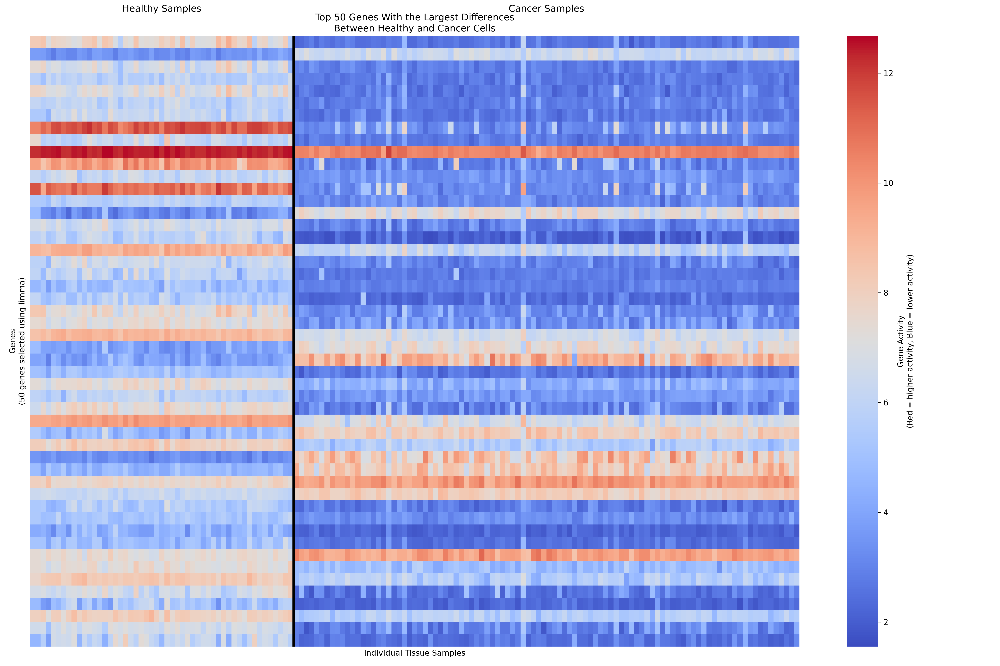
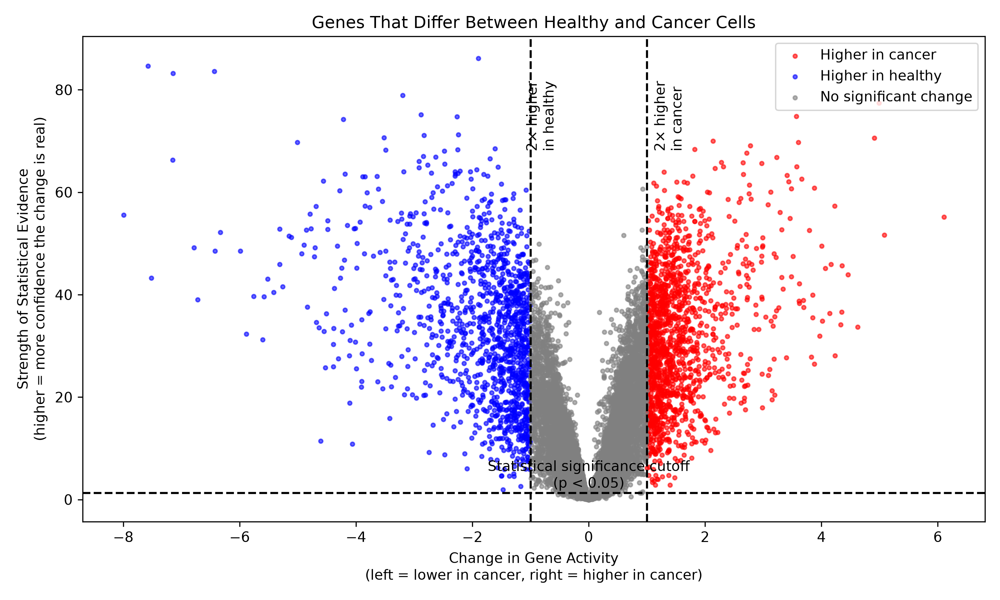
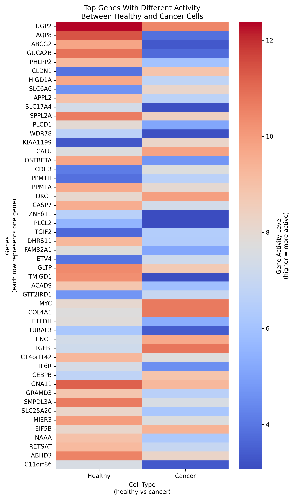

Finding genes that change between healthy and colon cancer tissue.
Our analysis identified genes with significantly different expression levels between healthy and cancer samples.
Genes with increased activity may be involved in cancer development, while genes with decreased activity may reveal changes in normal cell functions.
Genes that are more active in cancer samples compared with healthy tissue.
Genes that are less active in cancer samples.
Genes with large expression changes and strong statistical evidence.
Volcano plots show the relationship between the amount of gene expression change and statistical significance.
Shows how much a gene's expression increased or decreased.
Shows how likely the observed difference is due to chance.
Genes far from the center represent the largest and most significant changes.
Limma identified genes that showed significant differences between healthy and cancer samples.

Volcano plot showing statistically significant genes identified by Limma.

Heatmap showing patterns of gene expression across samples.
Welch's t-test provided another approach for identifying genes that differ between healthy and cancer tissue.

Genes with large fold changes and low p-values represent potential biological differences.

Changes in gene expression can reveal which biological processes are disrupted during cancer development.
Differentially expressed genes can reveal pathways involved in tumor growth and cell regulation.
Some genes may become useful markers for detecting or studying cancer.
Gene expression patterns may help identify possible targets for new drugs.
Gene expression analysis is not meant to replace current cancer screening methods.
Instead, after diagnosis, it can help doctors better understand tumors, predict behavior, and select treatment options.
Microarray analysis can help identify tumor characteristics and support personalized treatment decisions.
Gene expression analysis allows us to connect molecular changes with the development of colon cancer.